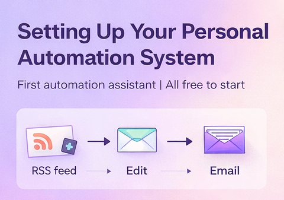

Building Your First Automation Assistant for Free with n8n and Oracle Cloud
A practical step-by-step guide to setting up your first personal automation system
Overview
Why build a personal automation system?
Many people start exploring AI and automation by trying tools individually. They test a chatbot. They try an API. They read about agents.
But what really changes productivity is not a single tool. It is building a small system that works for you every day.

Something simple like:
- collecting signals
- filtering information
- sending a short daily briefing
- preparing ideas for writing or research
This is exactly how analysts, consultants, and research teams operate. The difference is that today we can build a lightweight version of this for ourselves.
In this article I show how to build a first automation assistant using only free infrastructure. The goal is not sophistication. The goal is to create a stable base you can expand later.
The idea: start simple and expand
The first workflow we build is intentionally basic:
RSS feeds
→ filter articles
→ combine sources
→ send one daily email
This may look simple, but it teaches the three fundamental ideas behind all automation systems:
Signal ingestion
Signal processing
Signal delivery
Once this works, you can add:
- AI summaries
- social media automation
- research monitoring
- lead tracking
- training content generation
The important part is the structure.
Why n8n?
n8n is an open workflow automation tool similar to Zapier or Make, but with one crucial difference: you can host it yourself.
This means:
- no subscription required
- full control
- unlimited workflows
- no vendor lock-in
For learning automation, this is ideal.
Why Oracle Cloud Free Tier?
Oracle offers a surprisingly generous free infrastructure tier that includes:
- Always free virtual machines
- 1GB RAM instances
- free storage
- public IP
- continuous availability
For small automation servers this is more than enough.
The important question is:
Why choose the 1GB VM?
Because our goal is not performance. It is stability and cost control.
A 1GB VM is enough for:
- n8n
- small workflows
- RSS ingestion
- email automation
- simple AI integrations
And it forces good engineering discipline:
- lightweight workflows
- efficient pipelines
- minimal overhead
In other words:
Small infrastructure encourages clean design.
The architecture we are building
The system we create looks like this:
Oracle VM
→ Ubuntu
→ Docker
→ n8n
→ workflows
Visually:
Infrastructure layer
Operating system
Container runtime
Automation engine
Workflows
This layered approach makes recovery simple and predictable.
Step 1 — Creating the server
We start by creating an Oracle Cloud VM:
Choose:
Ubuntu 22.04
Always Free eligible
1GB RAM
Once created we connect using SSH:
ssh -i KEY ubuntu@SERVER_IPAfter connecting we update the system:
sudo apt update && sudo apt upgrade -yThis is standard practice before installing anything.
Step 2 — Installing Docker
Instead of installing n8n directly, we run it inside Docker.
This has major advantages:
- isolation
- easy upgrades
- easy recovery
- reproducibility
Install Docker:
sudo apt install docker.io -yEnable it:
sudo systemctl start docker
sudo systemctl enable dockerAllow your user:
sudo usermod -aG docker ubuntu
newgrp dockerAt this point Docker is ready.
Step 3 — Creating persistent storage
This is the most important design decision.
We create a folder:
mkdir -p ~/n8n_dataWhy?
Because containers are disposable. Data is not.
This folder will contain:
- workflows
- credentials
- settings
- users
If you protect this folder, you protect the system.
Step 4 — Running n8n
Now we launch n8n:
docker run -d \
--name n8n \
-p 5678:5678 \
-v ~/n8n_data:/home/node/.n8n \
--restart unless-stopped \
docker.n8n.io/n8nio/n8nThis means:
- Run container
- Expose port
- Mount storage
- Auto restart
We then access:
http://SERVER_IP:5678
Create the admin user and activate the community license.
Now the automation platform is ready.
Step 5 — Making a small VM stable
A 1GB VM can occasionally run out of memory. The simplest fix is adding swap.
Create swap:
sudo fallocate -l 2G /swapfile
sudo chmod 600 /swapfile
sudo mkswap /swapfile
sudo swapon /swapfileMake persistent:
echo '/swapfile none swap sw 0 0' | sudo tee -a /etc/fstabThis dramatically improves stability.
Building the first workflow
The goal of the first workflow is simple:
Collect a few articles daily from:
- AI news
- R ecosystem
- Infectious disease research
Limit each source to 3 items.
Combine everything.
Send one email.
The workflow structure becomes:
Schedule trigger → RSS reader → Limit → Merge → Format → Aggregate → Email
This teaches a very important automation principle:
“Always structure before adding complexity.”
Key design lessons from the workflow
Three ideas matter more than the tools.
Limit early
We limit each RSS source individually.
Not:
Merge → Limit
But:
Limit → Merge
This preserves balance between sources.
Merge streams before reporting
Multiple feeds must be merged before aggregation.
Otherwise each source behaves independently.
Aggregate only once
Aggregation should happen only after filtering and formatting.
This produces one clean output.
What this simple workflow already teaches
Even a basic pipeline like this introduces real concepts used in larger systems:
- Data ingestion
- Filtering
- Quota allocation
- Stream merging
- Data transformation
- Report generation
These are exactly the same concepts used in:
- Data engineering
- Research monitoring
- Risk analytics
- AI pipelines
The scale changes. The logic does not.
Disaster recovery mindset
One of the most important lessons when building infrastructure is this:
Servers fail. Systems break. Humans make mistakes.
So we design for recovery.
In this setup only one thing really matters:
~/n8n_dataIf this folder survives, the system survives.
Backup takes seconds:
tar -czf n8n_backup.tar.gz ~/n8n_dataIf disaster happens:
- Create new VM
- Install Docker
- Restore folder
- Restart container
Recovery time: about five minutes.
This is why containerized systems are powerful.
Why start this way instead of using SaaS automation?
Because building your own small system teaches:
- How workflows really operate
- How data moves
- How failures happen
- How to recover
And it removes cost pressure while learning.
Later you can always connect:
- OpenAI
- GitHub
- Google Drive
- Notion
- APIs
But the foundation remains yours.
What you can build next
Once this works, natural expansions include:
Adding AI summaries of articles.
Generating daily LinkedIn post ideas.
Tracking competitors.
Monitoring research papers.
Creating personal learning feeds.
The first workflow is not the goal.
It is the foundation.
Final advice
Do not try to build everything at once.
Build:
- one workflow
- then improve it
- then add one more
Automation grows best through iteration.
- Start simple.
- Keep it stable.
- Expand gradually.
That is how systems become reliable.
Closing thought
Automation is often presented as something complex or futuristic. In reality it starts with something very simple:
- Collect information.
- Structure it.
- Deliver it.
From there, intelligence can be added.
And that is exactly what we built here.
⸻
Future articles may expand this setup toward AI-assisted research workflows and personal knowledge systems.